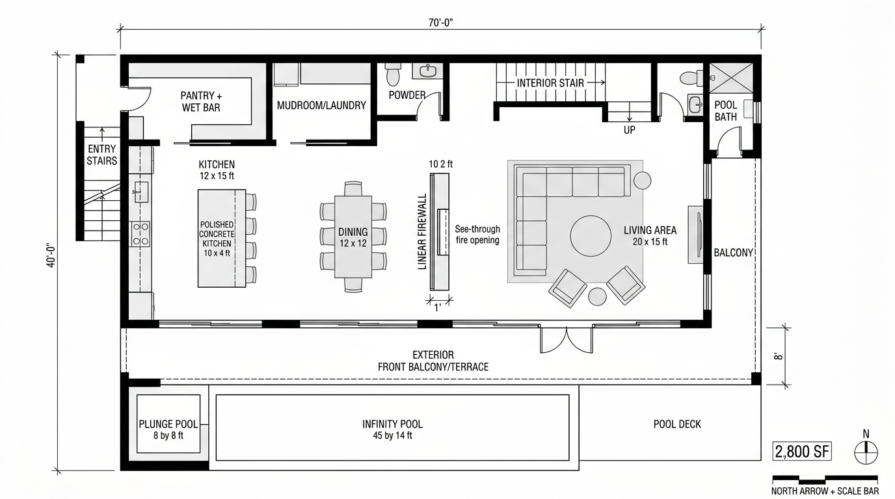

Most of what we review on this site is AI-generative, diffusion models, sketch-to-render plugins, prompt-driven scene synthesis. Chaos Vantage is none of those things. It's a real-time path tracer that runs your actual V-Ray scene at presentation framerates on an RTX-class GPU, with full ray-traced light, reflection, refraction, and global illumination.
It keeps appearing in 2026 round-ups (AIRI lab put it at the top of their real-time list this month) and we kept dodging it because it isn't AI. But after running Vantage in two client sessions over the past three weeks, I think the absence of AI is exactly the point. It deserves a place in the conversation about what's actually changing architect-client meetings right now.
Real-time path-traced visualization that opens your V-Ray scene as a navigable, photoreal environment. Built for live client design reviews, walkthroughs, and sun-study scrubs. Not generative AI, actual ray-traced light, computed at framerate.
What it actually does
You load a V-Ray scene, geometry, materials, lights, all of it, and Vantage opens it as a live, navigable environment. You can fly around with a game-controller-style camera, scrub the sun across the sky, swap materials, drop in entourage, and the view updates at 30–60fps with full ray-traced shading.
The key word is scene. Vantage isn't generating images. It's path-tracing your geometry in real time, the same way V-Ray would over five minutes of CPU rendering, but compressed to a frame budget. The output is technically a real render, light is computed from sources, materials respond to physics, glass refracts. There's no AI in the loop.
For practices coming from Enscape or D5, that distinction matters. Enscape and D5 are rasterized real-time engines with strong PBR shading, they look great, but they cheat on light. Reflections are screen-space, indirect bounce light is baked or approximated, and certain scenes (interior spaces with multiple bounces, glass curtain walls with deep mullion shadows) reveal those approximations. Vantage handles them honestly because it's tracing rays.
The client meeting moment
This is the use case where I changed my mind about Vantage.
We had an SD review last Wednesday for a mixed-use scheme in Old City. Client is a developer's project manager, sharp, opinionated, runs five buildings at a time. Has seen enough renders to know when one is staged. Past meetings: I'd send static V-Ray stills the night before, walk her through them in a screenshare, take notes, regenerate overnight, repeat. Cycle time per iteration: about 18 hours.
This time I loaded the scene into Vantage before the call. When she asked what the south elevation looked like at 4pm in October instead of the noon-July shot I'd sent, I dragged the sun. The shadows reorganized in front of her. When she asked what the brick would look like in a warmer tone, I swapped the material from the asset browser. Done in 15 seconds. When she wanted to see the corner from a pedestrian eye-line, I flew the camera there.
The meeting compressed eight hours of overnight regeneration into about forty minutes of live exploration. That changes the relationship, she stopped being a critic and started being a co-designer.
That last bit is the structural change. When the client can see consequences in real time, she stops asking "can we see option B?" and starts saying "wait, hold there, go a little south, that's better." It's a different conversation. We came out of the meeting with twelve specific direction-clarifying decisions instead of three. The schedule slip we'd been carrying on this project collapsed.
Where Vantage fits in the AI workflow
If you've been reading ArchiGen for a while, you know the studio stack we've converged on for 2026, sketch in Midjourney for ideation, model in Rhino or Sketchup, render in Veras or Rendair for client-deliverable stills, animate selectively. Vantage doesn't replace any of that. It's a different layer.
The honest framing: Veras (and the rest of the AI rendering category) is a finishing tool, you feed it a geometry pass and get back a photoreal final. Vantage is a conversation tool, you bring your geometry into it during design reviews to drive better decisions. The output of Vantage isn't usually the deliverable. The decisions it produces are.
Most of our Vantage scenes never get exported as final renders. They get screen-recorded during the meeting, with annotations as we talk. The recording is a project artifact in a way that a static deliverable isn't.
Where it falls down
Three real limitations we hit in three weeks:
Interior light is still hard at framerate
Vantage 2 is much better than 1 at interior global illumination, but a scene with eight area lights and reflective floors still needs a few seconds to fully resolve when the camera stops moving. The motion is real-time; the convergence isn't. For client meetings this is mostly fine, you stop, it sharpens, you keep going. For animation or recorded walkthroughs, you'll notice it.
Material editing is V-Ray, not Vantage
You can swap materials live, but you can't edit them. If a brick texture is reading too warm, you're going back into V-Ray Material Editor, fixing it there, and reloading. This breaks the live-meeting rhythm. Workaround: pre-stage a palette of acceptable variants (we keep five brick options, four glass options, three terrazzo floor options pre-loaded) and swap between them as the client reacts.
You need actual GPU
RTX 30-series minimum. Realistically 4080 or better for fluid framerates on complex scenes. Our office runs a 4090 on the workstation and a laptop 4080 for travel, both fine. If you're on a 3060 or an integrated GPU, this is not the tool for you.
Vantage vs Enscape vs D5: the honest delta
| Capability | Vantage 2 | Enscape 4 | D5 Render |
|---|---|---|---|
| Rendering technique | Path-traced (real rays) | Rasterized + screen-space FX | Rasterized + screen-space FX |
| Material fidelity | V-Ray material parity | PBR (own format) | PBR (own format) |
| Live navigation framerate | 30–60fps on RTX 4080+ | 60–144fps standard | 60–144fps standard |
| Interior GI honesty | True bounce light | Approximated | Approximated |
| Setup friction | None if you're V-Ray | Drag-into-Revit fast | Asset library is huge |
| Animation export | Yes, high quality | Yes | Yes, very fast |
| Best use case | Live SD/DD client review | BIM-first early concept | Production stills + reels |
The honest read: if you're already in V-Ray, Vantage costs you nothing additional and gives you a real-time scene that respects your material library exactly. If you're a BIM-first practice on Revit with no V-Ray investment, Enscape is still the faster setup. If you want hyper-polished marketing reels on a deadline, D5 has the asset ecosystem.
Should you add it
If you're a Chaos shop running V-Ray, Vantage is already included in your Premium plan. There's no reason not to install it this week. The friction is zero, the meeting transformation is real, and we've now stopped scheduling overnight render queues for SD-phase client reviews on three different projects.
If you're not in the Chaos ecosystem: Vantage exists as a standalone but the value proposition is meaningfully weaker. You're paying for a tool whose main strength is that it reads your V-Ray scenes natively, when you don't have V-Ray scenes. In that case, look at D5 or Enscape first. Come back to Vantage when you're already running V-Ray for production stills.
Where I'd flag a caution: don't oversell it. We had one project earlier this month where I demoed Vantage to a client who then assumed every meeting could be a live design jam, and started using the tool as a substitute for actually picking a direction. Real-time conversation is powerful, but it can let clients postpone decisions indefinitely. You still need to drive the meeting. The tool doesn't do that for you.
Want our full 2026 rendering stack?
How Vista Studios pairs Vantage with Veras, Enscape, and a hand-rolled AI finishing pass, the actual project pipeline, end to end.
Read the pipeline →Tested by Vista Studios on live SD-phase project work. No affiliate relationship with Chaos. Workstation: RTX 4090, 64GB RAM. Travel laptop: RTX 4080.